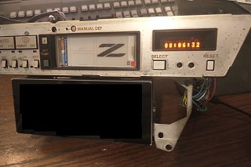
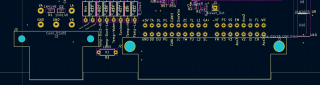

-
For those who are interested in such things, so most of the wire-to-board PCB headers in the car are from a well-supported TE/AMP part line.
The handful of exceptions:- The 15-position connector on the ECU. It's marked SJD, which should be Mitsubishi Wire & Cable (sold to Furukawa in 2011).
- The 22-position connector for the transmission control unit. No markings, but accepts the two 58S-type connectors.
- Compass amplifier, which is probably from the same line as the transmission control unit.
Other points are the Jetronic-type injection connectors, which are from an unknown supplier initially. Later cars (M30, Z32) and the Z31 injector campaign harness connectors are Mitsubishi Wire & Cable (now Furukawa) Jet-Fire Control (JFC) (what a name!). I hate these. The retention clips are stupid and frustrating, and the plastic likes to crumble. Sadly Nissan used a bunch of strange key-ings that aren't in the common AMP lineup.
Small interior unsealed connectors are 58S. Large interior unsealed connectors are 58M, as are the relay contacts. Exterior sealed connectors are 58W. Corsa-Technic can supply the terminals & seals for these. -
With all these different terminals and their corresponding expensive crimping tools, what are you using for crimpers?
One of the handiest tools I've found that is the closest to a universal terminal crimp tool is Molex PN 63811-1000.
It has crimp recesses that can be used on the wire and strain relief portions of all but the tiniest terminals I've encountered.
I've used them on JST/Molex/Hirose/AMP etc..and generic ring terminals with great success when i was our in-house cable guy.
It's not as easy as having the right tool, but then it's not 700.00 either.
84 AE/Shiro #683/Shiro #820/84 Turbo -
That's the one I'm using for the 0.110" and 0.250" terminals on the car already. I haven't procured the DLI terminals yet. I also have a set of PA-09 crimpers for the Mini-50 and JST-XH terminals on my own designs. Sometimes I'll give the 0.250" terminals a tiny daub of solder if I've been forced into using the wrong size terminal, or if I expect significant current. Modern wisdom says not to, but Nissan clearly evaluated & approved the technique on our cars & through the 90s. -
Because I can't stay focused on one project for more than 30 seconds, and require instant gratification, I've replaced the guts of the clock. Shame to lose that little VFD, but the HCMS 8-character LED displays fit the viewable window perfectly, are an excellent color match (well the orange one is, at least), and give more than twice the usable characters. The microcontroller has a proper RTC with battery backup, so I don't have to keep setting the clock each time I disconnect the battery to work on something.
At the moment it's really just a display & button board with a cable running out the back to the microcontroller, which wouldn't fit, but I'll have the proper board in the next PCB order.
This little guy will chat to the rest of the car over CAN, and let me view the wideband output & status, my fan controller state, and some Consult real time data when I get that box working properly.
I have also given myself the unenviable task of writing HVAC control logic. I might stick with the basic ePaper display for a while before I continue developing a full on replacement display board. I like the effect of displaying a constant logo, even when the board is hard-off. -
The junkyard thoughtfully provided a fresh, good condition stock power supply unit. Cleaning of the contacts & fresh solder on the connector joints and it's working nicely. I'm going to avoid blowing this one up until I've completed comparative evaluation of my new design. I also got a digital dash speedometer cable, which is an oddly rare item.
The junkyard also provided a voice warning module. Not really of any use to me, but I thought I would at least dump the EEPROM, as the Z31 warning voice is actually synthesized instead of encoded on a record like all the other Nissan versions.
The revised HVAC module has been in and out of the car several times while I work on the mixing door tuning. It does run the system in a primitive manner without exploding, but cycles the adjustment solenoids far too frequently. I may abandon temperature control for now, and let the "Set Temp" buttons directly control the mix door position as on the manual climate controls while I just drive the car and log data off the new unit.
Finally, to get a good amber out of the VFD you have to stack two of the common "red" parcan filters from amazon. I figured I would try that before resorting to more exotic swatchbooks, but the result of two reds is just lovely.Last edited by Acmex; 07-16-2022, 05:07 PM. -
You don't happen to have reverse engineered a pinout for either the analog or digital climate controllers have you? I've acquired several of each over the years and being able to bench test them would be superb.
84 AE/Shiro #683/Shiro #820/84 Turbo -
Only in two places, my scribbled notes and the actual board design files on github. I gave up on the manual HVAC control head after realizing the pinout didn't remotely match the automatic one and I would have to swap that harness anyway. I would also like to know more about the stock display panel, but the stock LCD control IC also handles all the user interface & buttons and I'm not sure how to probe the LCD supply voltages. I think it's a static drive scheme, since they need 3 LCD controllers for this relatively simple display.
Power & ground are fed in on the 5-pin connector, VA & LA are switched power for ignition / accessory or lighting / accessory, respectively. VB is battery power. Supplying these should get you a living HVAC head (although no backlight).
+5V is the supply out to the thermistors/potentiometers/switches. The GND on the 40-pin connector block is the signal return for the same.
TA - Ambient temperature
DL - Lower Duct Temperature
DU - Upper Duct Temperature
DD - Defrost Duct Temperature
PL - Position of lower Air Mix Door
PU - Position of upper Air Mix Door
CANH/CANL/OneWire are me repurposing unused pins, or the stock "diagnostic" switch pins. Stock, CANL/OneWire trigger the input or ouptut diag mode CANH is unpopulated IIRC.
LC - Bulb Check Relay (Engine running signal, switched to GND if alternator not energized)
ZC - Sunload photodiode
TW - Coolant temperature switch
TL - Lower Interior Temperature
TU - Upper Interior Temperature
L1/L2 - Illumination bulb supply
GA - Superheat Timer ("Low Refrigerant Gas light")
SL - Lighting signal (Causes the LEDs to dim)
The outputs are all NPN transistors with zener diodes for suppression, except maybe the fan control voltage. I give the fan control voltage a +5V pullup and then PWM it to ground, which the digital fan amplifier is happy with.
VF - Fan output voltage
FR - Fan relay, low side switch
FS - Air Mix door 2 position control
F3 - Air Mix door 2 position control
VS - Air Mix door 1 position control
V3 - Air Mix door 1 position control
EM - emergency defog/defrost relay (full fan speed, full heat, AC ON, only for cars thru '87-ish)
Aux3 - Not assigned stock
Aux2 - Not assigned stock
V2 - Vent door solenoid
I1 - Intake solenoid 1
I2 - Intake solenoid 2
FL - Floor door solenoid
CR - AC compressor relay
Aux1 - Not assigned stock
 -
Fully stock cluster is in the car and working well, after repairs. Some reaction basically ate all the copper by the VFD negative high voltage regulation pass transistors, and the regulating Zener for the trip meter was cracked in half. Anyone with digital cluster issues that aren't solved by touching up the connector joints should check these if the negative voltage offset is not present at the VFD filament drives. It all visually looked OK, until I poked the SMD resistors and they fell off the board.
I rather like the early (84 / 85-86) digital clusters with the triple bar displays better than the late clusters with the stupid "status check' box that they held over from the 280ZX. So now I have an '85 GLL cluster in my '88 GL. This required hybrid-izing the dash harness, although only three actual splices were required. This was due to differences in hazard warning, headlight retraction control, and fog light status, so I used the '88 switch pods and the '85 gauge wiring. It's also fun to watch the acceleration gauge do it's thing. I don't have a good compass controller so that gauge just sits idle.
I also swapped the new HVAC controller over to pure mix door position while I think about the algorithm a bit more. Works OK with just automatic air flow control, since GA demands I leave it at full cold for at least the next three months.

Copyright © 2006–. All rights reserved. Privacy Policy